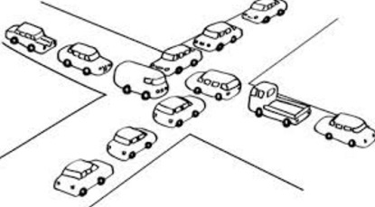

A deadlock is a state in which each member of a group is waiting for another member, including itself, to take action.
出现线程 “互相等待” 的情况

Model checker 可以告诉你为什么
lock(&lk);
// lk = LOCKED;
lock(&lk);
// while (xchg(&lk, LOCKED) == LOCKED) ;
看起来很傻，你觉得自己不会犯这错误？
哲 ♂ 学家吃饭问题
void Tphilosopher() {
P(&avail[lhs]);
P(&avail[rhs]);
// ...
V(&avail[lhs]);
V(&avail[rhs]);
}
System deadlocks (1971)：死锁产生的四个必要条件
四个条件 “缺一不可”